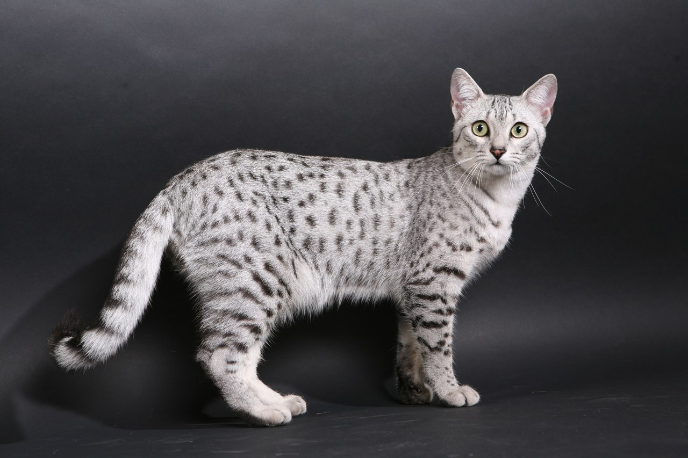

Породы делятся на:
Австрийский мист
Австралийская дымчатая кошка из той породы кошек, которую можно смело называть уникальной. Родившись на родине кенгуру, в Австралии, австралийский мист взял лучшее от своих ближайших родственников – абиссинской кошки, бурмезской и от простых непородистых котов. Лучшее, в первую очередь, выражено в окрасе. Это — или пятнистая шерстка или мраморно-пятнистая с общим тикированным фоном. За пределами Австралии данная порода практически не встречается.
Бурмилла
Эта порода очень молодая, ей всего около 30 лет. Родиной этих прекрасных созданий является Великобритания. Одна женщина с высоким чином баронесса Миранда фон Кирхберг занималась разведением двух пород кошек: персидских и бурманских. Её поместье было очень большое и для каждой породы было свое отделение с комнатами. Все отделения и комнаты закрывались на ключ, чтобы избежать незапланированных случек. В 1981 одна из домработниц баронессы, чья обязанность была следить за кошками, забыла закрыть одну из комнат с бурманскими красавицами.
Аравийский мау

Эта порода в 2008 году получила признание Ассоциации WCF и были приняты общие стандарты. Остальные же международные фелинологические ассоциации пока оставили открытым вопрос признания этой породы. Но несмотря на это, кошки Мау стали любимцами всех кошатников за преданный и дружелюбный характер. На сегодняшний день количество представителей породы значительно возросло, а заводчики продолжают ее совершенствовать.
Кимрик
Кошки породы кимрик — бесхвостые, иногда даже шутят что они произошли от кошки и кролика. На самом деле, бесхвостость это результат генетической мутации, которая развилась у кошек обитающих на отдаленном острове Мэн, у побережья Великобритании. Согласно историческим записям острова Мэн, бесхвостость у кошек началась довольно давно. Учитывая закрытость острова от внешних связей и небольшую популяцию, она передавалась от одной кошки к другой и закреплялась в генах.
Сомалийская кошка
Американская история сомалийских кошек началась в 70-х гг прошлого века, когда к местной заводчице «абиссинок» Эвелине Мэгью попал многострадальный котик, от которого уже отказалось несколько хозяев. Ее опытный взгляд сразу отметил невероятную красоту нового питомца, и Эвелина решила разузнать историю его происхождения.
Британец
Милые создания родом из Великобритании появились в XX веке, путем экспериментального скрещивания короткошерстных британок с пушистыми персами. Но, осталось несколько симпатичных длинношерстных котят, которые и стали прародителями нынешних представителей. Чуть позже эта порода была признана как отдельная. На сегодняшний день котята британские длинношерстные популярны не только на своей исторической родине, но и в других странам мира.
Американский кёрл
Происхождение этой необычной породы берет начало в США. Длинношерстные кошки с загнутыми ушками явились миру в самом начале 80-х годов XX столетия. Особая черта породы (загнутые ушные раковины) проявляется лишь спустя несколько месяцев после рождения длинношерстных котят.
Петерболд
В Санкт-Петербурге в 90-х Ольга Миронова попробовала скрестить донского сфинкса и ориентальную кошку. На коже новой породы лысых кошек, названной Петерболд или Петербургский сфинкс, имеется замшевый на ощупь мягкий подшёрсток. Получили несколько разновидностей лысых кошек с шерстью, у некоторых ворс не превышает 2 мм, а есть киски с небольшим шерстяным покровом, бровками и усами.
Двельф
Селекционная программа охватила манчкина, сфинксов и американских кёрлов и породила бесшёрстое создание с отогнутыми ушками. Название дали по сочетанию английский слов dwarf - карликовый и elf – по породе кошек с большими загнутыми ушами. Фелинологи до сих пор рассуждают, повлияло ли такое слияние генов на здоровье породы двельф, которая считается экспериментальной.